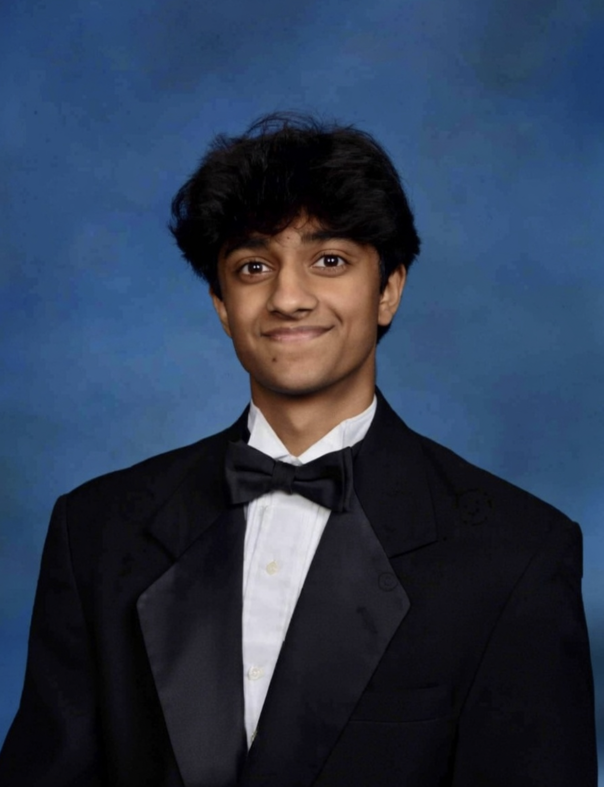

Senior
Project
Portfolio
Hello Graders! My name is Akaash Srivastava. My internship took place at Jain Chem Ltd., where I worked under the mentorship of Nathan Pando as a laboratory intern, analytical chemistry aid, and research assistant. While I may not pursue a career in the chemical industry, this experience has fundamentally shaped how I approach problem-solving, data analysis, and scientific inquiry. This portfolio tells the story of my growth: from finding my footing in a manufacturing environment, to conducting data analysis and research using advanced instruments, to applying critical thinking in ways that pushed me well beyond my comfort zone.

Recognition Submission
Intent For
Distinguished
I am submitting this portfolio with the intent for Distinguished. Over the course of this internship, I logged 105+ hours at Jain Chem Ltd., nearly doubling the requirement. I assisted in solving real problems that had been persisting in the lab, wrote procedures that other chemists could use, ran complex and advanced instruments independently, and pushed through weeks of failure without losing momentum. My journals are detailed, my reflections are honest, and my growth from September to January is documented thoroughly. I came into this internship thinking I wanted a career in chemistry and left with something far more valuable: the ability to think critically and solve problems in any environment. I am confident this portfolio meets the standard for Distinguished.
To make this portfolio easy to follow, I've organized everything chronologically from start to finish. It opens with my starting point (my goals, expectations, and initial mindset heading into the internship) before following my development month by month through conference sheets, reflections, and evidence of learning. Each section builds on the last, documenting how my skills and understanding evolved over time. The reflection section ties it all together, looking back at where I started and assessing how far I've grown.